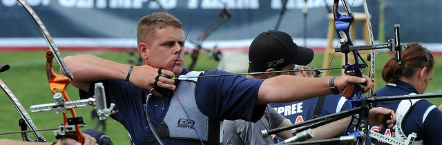

Straight To The Point Archery
Straight to the Point Archery is a non profit archery education center founded in 2005 by Giap Nguyen. Our state of the art educational and training facility incorporates detailed technical video analysis combined with generations of archery experience from certified coaches and instructors.
Straight to the Point Archery is an indoor training facility with 28 shooting (14 - 10 yard lanes and 14 – 20 yard lanes) and 2 private coaching rooms. We also have access to 26 additional 20 yard lanes and an outdoor shooting field. We offer several types of lessons to accommodate everyone from the first time archer to the professional archer. Once set up with proper fitting equipment, each archer will be given the basic safety instruction to start and will be introduced to various shooting techniques.
From Beginner to Elite, archers of all ages and ability learn about this exciting Olympic and international sport. Sign up for a group lesson, private class, schedule a birthday or corporate party or compete at one of our many tournaments. Straight to the Point Archery also offers homeschooling programs, kids club events, YMCA classes, Boy and Girl Scouts achievement programs and several other youth group activities. We are dedicated to teaching valuable life skills to the youth in our community through the wonderful discipline of archery.
For more about us and what we have to offer Click Here!